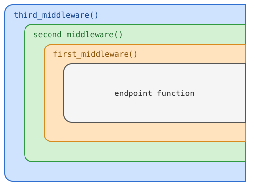

1. Middleware¶
Se for deg at du vil legge på følgende header til alle svarene som APIet ditt sender:
(Dette kalles CORS, og du kan lese mer om det her: https://developer.mozilla.org/en-US/docs/Web/HTTP/Guides/CORS.)
Du kunne gjort dette ved å endre alle funksjonene i APIet til å ta inn Response-objektet,
og sette headeren manuelt:
@app.get("/some-path")
async def some_operation(response: Response)
response.headers["Access-Control-Allow-Origin"] = "*"
# ...resten av funksjonen
Dette blir mye duplisert kode. Heldigvis finnes det en enklere måte: Middlewares! Middlewares er funksjoner som pakker inn endepunktene dine, og kjører både før og etter selve endepunktsfunksjonen. Disse modifiserer alle endepunkter i APIet.

Når du legger til en ny middleware havner den "utenfor" alle de eksisterende. Det vil si at den siste middlewaren du legger til kjører helt først og helt sist.
Hvordan skriver man en middleware?¶
from fastapi import FastAPI, Request, Response
from typing import Awaitable, Callable
app = FastAPI()
@app.middleware("http")
async def my_middleware(request: Request, call_next: Callable[[Request], Awaitable[Response]]):
# ...Kode som skjer *før* endepunktsfunksjonen...
response = await call_next(request)
# ...Kode som skjer *etter* endepunktsfunksjonen
return response
Hvorfor dette call_next-parametret, og hva er den typesignaturen?
Middleware-funksjonen skal ikke trenge å tenke på hvor den befinner seg i middleware-stacken. Alt den bryr
seg om er hva som skjer før og etter neste lag innover. call_next er da en funksjon som sender kontrollen
videre innover i stacken. Typesignaturen kan leses som "async-funksjon som tar ett argument av type Request
og returnerer en Response".
request.state¶
Som beskrevet over, er middlewares usynlige for hverandre, og for endepunktsfunksjonene. Men hva om du
trenger å la dem snakke sammen? Det finnes en måte å smugle data innover i stacken, ved å bruke state-feltet
på request-objektet. state er en dict som i utgangspunktet er tom, og hvor du kan lagre hva som helst. Typisk
vil dette være berikende kontekst om forespørselen, for eksempel en autogenerert ID som kan brukes for logging
og tracing.
Dette er kraftig og nyttig, og også lett å misbruke. Prøv å holde deg til "rene" middlewares så godt det lar seg gjøre.
Oppgaver¶
- Legg til CORS-støtte i APIet ditt.
- Logg alle kallene som treffer APIet. (FastAPI gjør dette allerede, men det er nyttig å lære seg hva slags felter som finnes i Request-objektet.)
- Samle metrikker per endepunkt, om antall kall og total/gjennomsnittlig prosesseringstid. Server dette på et eget endepunkt. (Prometheus-format hvis du vil være fancy.)